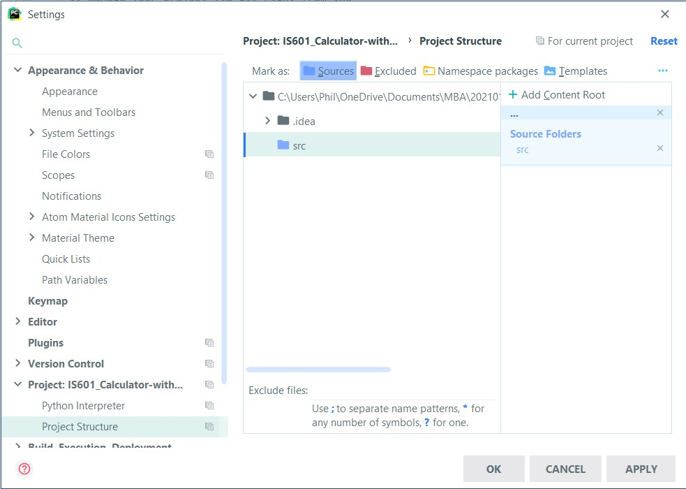
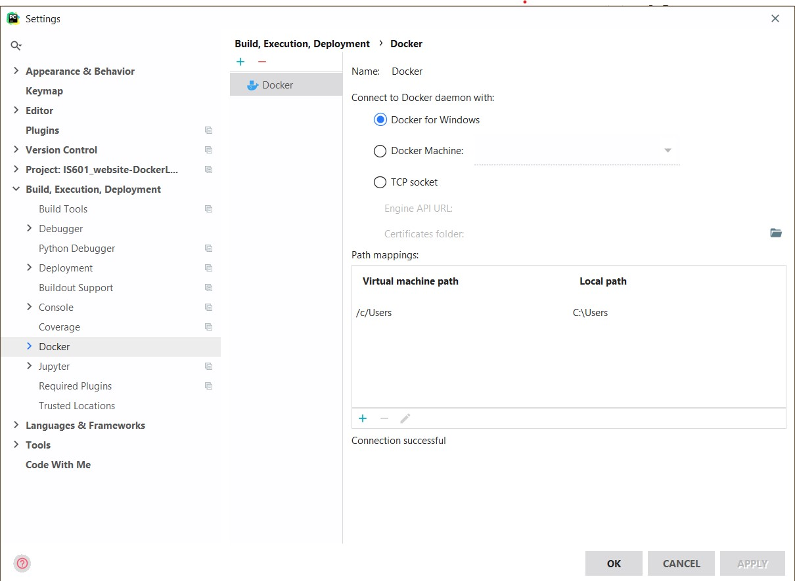
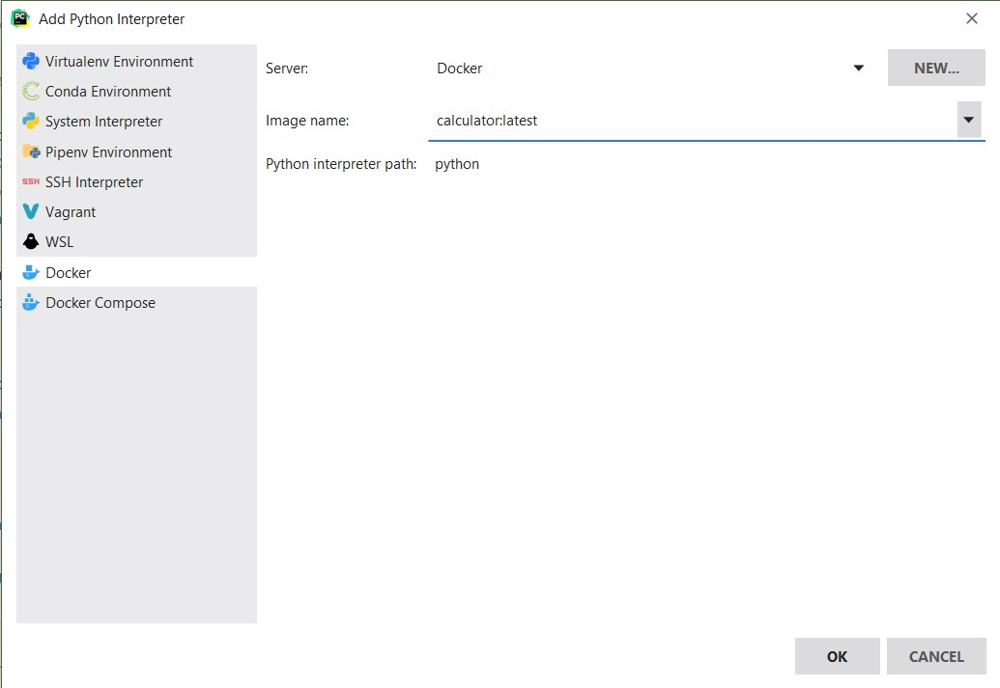

Tutorial - pyCharm, Docker, and Python code
Prerequisites
There are three prerequisites for this tutorial.
- You have installed pyCharm.
-
You have installed Docker. It is a good idea to test your installation:
docker run hello-world
- You have created a repository on github for python code.
Connect to git
- Clone your git repository into pyCharm
- Create a src directory in your project in pyCharm.
-
Goto
Settings, expand yourProjectsettings and selectProject Structure. -
Select the
srcdirectory andMark it as Sources.  - Create a gitignore and add .idea. This is an internal pyCharm directory that is not needed in your repository.
- Create a python file. Anything that is functional python code will work for this tutorial.
You have now connected pyCharm to git, and can manage your project from within the pyCharm GUI.
Connect to Docker
-
Make sure Docker is running. If you have not already done so, test your installation.
docker run hello-world
- Open your project from earlier in pyCharm and goto
Settings. - Expand
Build, Execution, Deploymentand click Docker. -
Click the + and select
Docker for Windowsor whichever is appropriate for your operating system.  - Create the
Dockerfileand add the code for your project. - At the top of the pyCharm window, click the ADD CONFIGURATION button.
- Click the + and select
Dockerfile. - If your Dockerfile wasn't automatically added, add it now.
-
Fill in the
nameandimagetag fields, and make sureRun Built Imageis checked. - At the top of the pyCharm window, click the Play button. The Docker console will open and your project will run.
You have successfully connected pyCharm to Docker.
Use the remote python interpreter
- At the bottom of the pyCharm window, click <No interpreter> and select Add Interpreter...
- Click Docker and select the image that you created in the previous section. Click OK. 
You've now successfully added the remote python interpreter from the Docker image to your project.